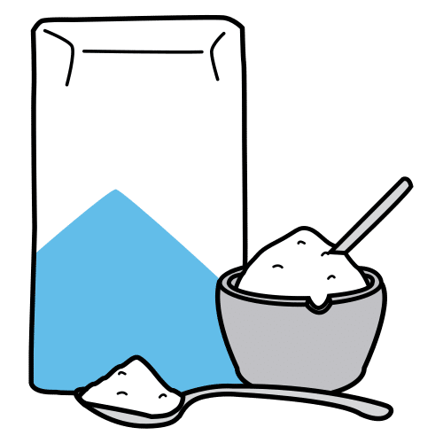
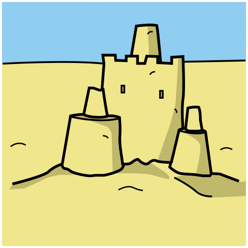
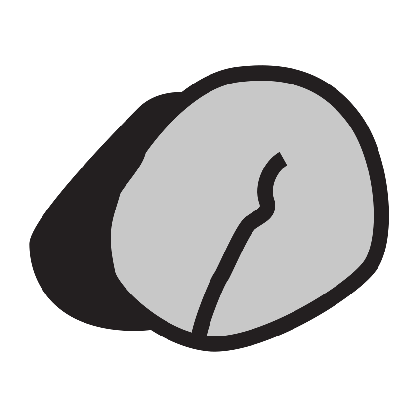

Prénom : Date :
Période 3 · Fiche élève 1
Phonologie — premiers sons (éval. 3.3)
Les premiers sons du Nouvel An
Consigne : 1. Nomme les images. Entoure celles dont le nom commence par le son [a], comme dans « ananas ». 2. Colorie les images dont le nom fait entendre le son [i], comme dans « riz ». 3. Relie les images dont le nom commence par le même son : « panda » et « panier ».
1J’entoure les images qui commencent par [a].
2Je colorie les images où j’entends [i].
3Je relie les images qui commencent par le même son.
★ Défi : trouve un mot qui commence par le même son que ton prénom.
repérer un son voyelle au début ou dans un mot ; reconnaître l’attaque d’un mot.A ☐ · EC ☐ · NE ☐
Prénom : Date :
Période 3 · Fiche élève 2
Lettres — capitales, script, cursive (éval. 3.4)
Les lettres de la pagode
Consigne : 1. Relie chaque lettre capitale à la même lettre en script. 2. Sur chaque ligne, entoure le mot pareil au modèle. 3. Écris le mot en lettres script sous le mot en capitales. 4. La maîtresse a écrit les mots en cursive : montre-lui « panda », puis « riz ».
2
| panda | banda panda pnada |
| riz | rit zir riz |
| tigre | tigre trige tirge |
4Je retrouve le mot en cursive.
modèle écrit par la maîtresse en cursive : panda · riz
associer capitales et script ; reconnaître un mot dans les trois écritures.A ☐ · EC ☐ · NE ☐
Prénom : Date :
Période 3 · Fiche élève 3
Écriture — cursive (éval. 3.5)
Les lanternes et la grande vague
Consigne : 1. Repasse les lanternes en tournant dans le sens de la flèche de la maîtresse, puis continue. 2. Repasse les vagues qui s’enroulent, puis continue-les. 3. Écris chaque lettre ronde en cursive, en regardant le modèle. 4. Écris ton prénom en cursive en regardant le modèle de la maîtresse.
3Les lettres rondes.
modèle écrit par la maîtresse : c · o · a · d
4Mon prénom en cursive.
mon prénom, écrit par la maîtresse :
tracer des ronds dans le bon sens ; écrire les lettres rondes et son prénom en cursive avec un modèle.A ☐ · EC ☐ · NE ☐
Prénom : Date :
Période 3 · Fiche élève 4
Compréhension — un conte (éval. 3.6)
La grande course des animaux
Consigne : 1. Qui est arrivé le premier à la grande course ? le deuxième ? le troisième ? Écris 1, 2, 3 sous chaque animal. 2. Entoure les animaux qui ont couru la grande course de l’Empereur. 3. Le chat est arrivé trop tard. Entoure le visage qui montre ce qu’il ressent, puis explique à la maîtresse pourquoi.
★ Défi : raconte la course à ton voisin sans regarder le livre, avec les mots « d’abord », « ensuite », « à la fin ».
se souvenir de l’ordre d’un conte et de ses personnages ; nommer l’émotion d’un personnage.A ☐ · EC ☐ · NE ☐
Prénom : Date :
Période 3 · Fiche élève 5
Mathématiques — jusqu’à 10 (éval. 3.7)
Les cerfs-volants du Nouvel An
Consigne : 1. Compte et écris le nombre dans la case. 2. Combien de ronds manque-t-il pour faire 10 ? Écris le nombre. 3. Colorie pour montrer 10 de deux façons différentes, avec deux couleurs, puis dis-les : « 10, c’est 6 et 4 ».
★ Défi : avec tes dix doigts, montre toutes les façons de faire 10.
dénombrer jusqu’à 10 ; décomposer 10.A ☐ · EC ☐ · NE ☐
Prénom : Date :
Période 3 · Fiche élève 6
Mathématiques — rang, bande, écarts (éval. 3.8)
La file du zodiaque
Consigne : 1. Les animaux arrivent de gauche à droite. Entoure le 4ᵉ animal en partant du rat. Barre le 2ᵉ en partant de l’autre bout. 2. Écris les nombres qui manquent dans la bande. 3. Nils a 6 cerfs-volants, Ana en a 9. Combien Ana en a-t-elle de plus que Nils ? Écris le nombre.
★ Défi : quel animal est 7ᵉ en partant du rat ? Et en partant du chien ?
repérer un rang jusqu’à 10 ; compléter la bande numérique ; trouver un écart.A ☐ · EC ☐ · NE ☐
Prénom : Date :
Période 3 · Fiche élève 7
Mathématiques — solides (éval. 3.9)
Les solides du temple
Consigne : 1. Relie chaque solide à son nom (la maîtresse lit les noms). 2. Entoure les cubes en rouge, les boules en bleu et les cylindres en vert. 3. Entoure les solides qui peuvent rouler.
1
le cône
la pyramide
le cube
le cylindre
la boule
★ Défi : trouve dans la classe un objet qui a la forme d’un cylindre et un objet qui a la forme d’un cube.
reconnaître et nommer cube, boule, cylindre, cône, pyramide.A ☐ · EC ☐ · NE ☐
Prénom : Date :
Période 3 · Fiche élève 8
Mathématiques — motifs (éval. 3.10)
Les guirlandes qui grandissent
Consigne : 1. Continue la guirlande : dessine les lanternes qui viennent ensuite. 2. Continue l’escalier : dessine les deux marches suivantes. 3. Continue la guirlande des animaux, puis dis sa règle à la maîtresse.
★ Défi : invente une guirlande qui grandit et fais-la continuer à ton voisin.
reconnaître et prolonger un motif évolutif ; dire sa règle.A ☐ · EC ☐ · NE ☐
Prénom : Date :
Période 3 · Fiche élève 9
Le vivant et la matière (éval. 3.12)
Le phasme et le ver à soie
Consigne : 1. Range les étapes de la vie du phasme : écris 1, 2, 3 dans les cases. 2. Fais de même pour le ver à soie. 3. Nous avons mis chaque chose dans un verre d’eau et nous avons mélangé. Fais une croix pour dire ce que nous avons vu.
3Dans le verre d’eau.
| | il disparaît dans l’eau | on le voit encore |
|---|
 | le sucre | | |
 | le sable | | |
 | le sel | | |
 | le caillou | | |
★ Défi : le petit phasme grandit en changeant de peau. Comment appelle-t-on cela ?
ordonner les étapes de la vie d’un animal ; distinguer ce qui se dissout dans l’eau.A ☐ · EC ☐ · NE ☐
Crédits des images
Les illustrations de ce cahier sont des pictogrammes Mulberry Symbols (Paxtoncrafts Charitable Trust, licence CC BY-SA 4.0, mulberrysymbols.org) et des pictogrammes ARASAAC (auteur : Sergio Palao, propriété du Gouvernement d’Aragon, Espagne, licence CC BY-NC-SA, arasaac.org). Merci à leurs auteurs et autrices.